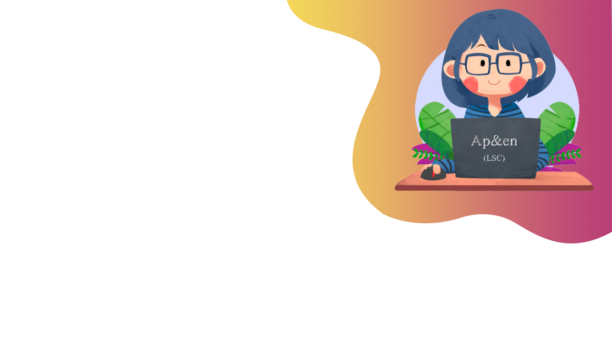

Document

Nuestros servicios 1. Fomentar la importancia del lenguaje de señas 2. Ofrecer contenido de calidad al usuario 3. Aprender mediante elementos interactivos 4. Compartir con otras personas el conocimiento adquirido 5. Orientar a las personas sobre la importancia del lenguaje de señas colombiana Ten en cuenta dar click a nuestros servicios para acceder al vocabulario